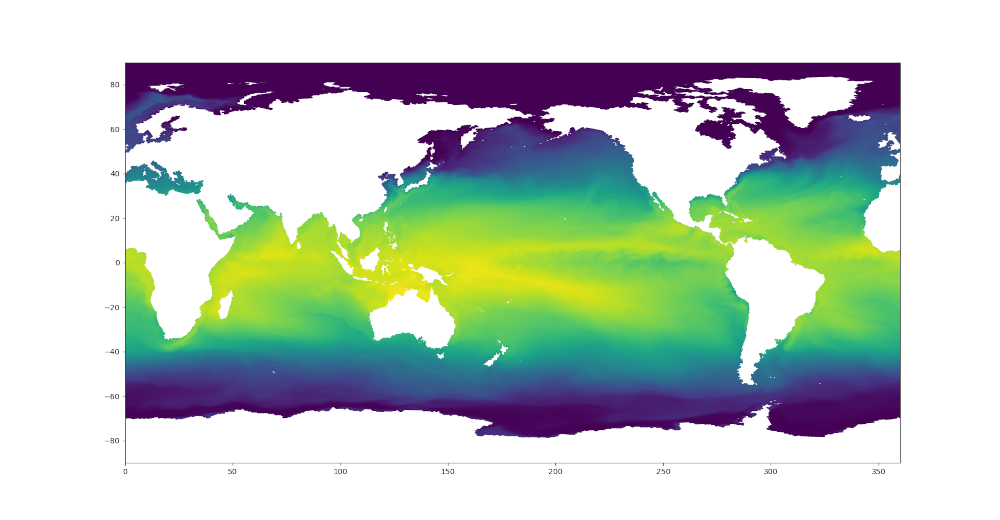

Visualization
MPAS-Tools has kind of a hodge-podge of unrelated visualization tools. This is largely because MPAS-Tools is conceived of primarily as a repository for tools for manipulating MPAS meshes during their construction and initialization.
MPAS to XDMF Converter
The MPAS to XDMF Converter offers a cutting-edge solution for converting MPAS data into a ParaView-friendly format. It is not only significantly faster but also more efficient in terms of disk usage, making it a better alternative to the VTK extractor.
Please refer to MPAS to XDMF Converter for detailed information.
ParaView VTK Extractor
Documentation for the ParaView VTK Extractor has been moved to its own page. Please refer to ParaView VTK Extractor for detailed information.
MPAS Mesh to Triangles
A relatively new and under-explored functionality in MPAS-Tools is the
capability to extract a triangle mesh for visualization from an MPAS mesh.
This functionality comes from the function
mpas_tools.viz.mesh_to_triangles.mesh_to_triangles(). The function
takes an MPAS mesh as an xarray.Dataset object as its only required input
and produces another xarray.Dataset with the triangle mesh that connects
pairs of adjacent vertices to cell centers as its output. Thus, each hexagon
becomes 6 triangles, each pentagon becomes 5, and so on.
In addition to the points and connectivity data for defining these trinagles,
the output dataset, dsTris, also includes the cell index that each triangle
is in and cell indices and weights for interpolating data defined at cell
centers to triangle nodes. dsTris includes variables triCellIndices,
the cell that each triangle is part of; nodeCellIndices and
nodeCellWeights, the indices and weights used to interpolate from MPAS cell
centers to triangle nodes; Cartesian coordinates xNode, yNode, and
zNode; and lonNode` and latNode in radians. lonNode is
guaranteed to be within 180 degrees of the cell center corresponding to
triCellIndices. Nodes always have a counterclockwise winding.
Here is an example workflow for using this function:
import xarray
import numpy
import matplotlib.pyplot as plt
from matplotlib.tri import Triangulation
from mpas_tools.viz import mesh_to_triangles
dsMesh = xarray.open_dataset('mpaso.rst.0501-01-01_00000.nc')
dsTris = mesh_to_triangles(dsMesh, periodicCopy=True)
sst = dsMesh.temperature.isel(Time=0, nVertLevels=0).values
sstTri = sst[dsTris.triCellIndices]
sstNode = (sst[dsTris.nodeCellIndices]*dsTris.nodeCellWeights).sum('nInterp')
nTriangles = dsTris.sizes['nTriangles']
tris = numpy.arange(3*nTriangles).reshape(nTriangles, 3)
lonNode = numpy.rad2deg(dsTris.lonNode.values).ravel()
latNode = numpy.rad2deg(dsTris.latNode.values).ravel()
sstNode = sstNode.values.ravel()
triangles = Triangulation(lonNode, latNode, tris)
plt.figure(1)
plt.tripcolor(triangles, sstNode, shading='gouraud')
plt.xlim([0., 360.])
plt.ylim([-90., 90.])
plt.figure(2)
plt.tripcolor(triangles, sstTri, shading='flat')
plt.xlim([0., 360.])
plt.ylim([-90., 90.])
plt.show()
In this example, mpaso.rst.0501-01-01_00000.nc is a restart file from a
simulation with an EC at the default 30 to 60 km resolution (see
Defining an Eddy-closure Mesh); the restart file contains both mesh information and a snapshot
of the 3D temperature field.
Here are the resulting plots (which look nearly identical at this resolution):
{kind=link}

Colormaps
Some MPAS-Tools routines include plots of mesh resolution and related variables.
We have found it handy to use the
SciVisColor Colormaps for some of these plots.
Unfortunately, there is not a standard python package for adding these
colormaps to matplotlib (as is the case for
cmocean, for example). To add the
SciVisColor colormaps, call the function
mpas_tools.viz.colormaps.register_sci_viz_colormaps(). No arguments
are required, as the XML files for defining the colormaps are included in the
package.
In this example, we use the 3Wbgy5 colormap:
{kind=link}
Horizontal Transect Interpolation
The mpas_tools.viz.transect.horiz module provides functions for
interpolating MPAS data onto a horizontal transect. This is useful for
visualizing data along a specific path on the horizontal plane of the
mesh.
The function
mpas_tools.viz.transect.mesh_to_triangles() converts an MPAS
mesh to a triangle mesh by decomposing each cell into one triangle connecting
the cell center to each edge. The resulting triangle mesh can then be used
for visualization or for other spatial analysis tasks.
The function
mpas_tools.viz.transect.make_triangle_tree() creates a triangle
tree for efficient point location. This function is used internally to
speed up the process of finding which triangle a given point lies within.
It constructs a data structure that allows for fast spatial queries,
making it more efficient to determine the location of points relative to
the mesh. This is especially useful for high-resolution meshes or when
performing a large number of point location operations.
The function
mpas_tools.viz.transect.find_planar_transect_cells_and_weights()
finds the cells that intersect a planar transect and the weights for
interpolating data from cell centers to the transect nodes. The function
takes the MPAS mesh as an xarray.Dataset object and the start and end
points of the transect as Cartesian coordinates. The function
returns the cell indices and weights for interpolating data from cell
centers to the transect nodes, the indices of the cells that intersect
the transect, and the Cartesian coordinates of the transect nodes. This
is a key step in creating transect plots of MPAS data.
The function
mpas_tools.viz.transect.find_spherical_transect_cells_and_weights()
does the same for a transect on the sphere. It
identifies the cells intersected by a great circle path defined by
longitude and latitude coordinates. Like its planar counterpart, it
returns cell indices, interpolation weights, intersected cell indices,
and transect node coordinates, but all calculations are performed on the
sphere.
The function
mpas_tools.viz.transect.interp_mpas_horiz_to_transect_nodes()
interpolates MPAS data to transect nodes. This function takes the MPAS
data field and the transect node information (cell indices and weights)
generated by either the planar or spherical transect finding functions.
It then performs a weighted average of the data values at the cell
centers to estimate the data values at the transect nodes. The result is
a 1D array of interpolated data values along the transect.